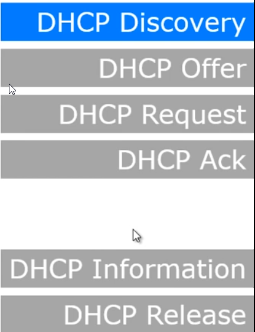

Dynamic host protocol configuration:
It's a protocol to get a IP address automatically/Dynamically
It's is a network protocol used on IP networks where a
DHCP server automatically assigns an IP address and other information to each host on the network so they can communicate efficiently with other endpoints.
It consist's of 6 steps:

1) DHCP Discovery : Here the machine broadcasts and ask's Is there any dhcp server here in subnet?
2) DHCP Offers: DHCP server offers an IP address from it's reserved pool
3) DHCP Request: New machine accepts the IP and sends request to DHCP
4) DHCP Ack: DHCP server reserves/assigns the IP to the machine and acknowleges it
5) DHCP Information: Its issued by client in case client demands more info than the info provided by DHCP
6) DHCP Release: At the time we disconnect the machine this message is given to DHCP server to reserve back the IP alloted.(Not Mandatory)
Transmission Control Protocol (TCP):
3 way Handshake

TCP Windowing :Transmission starts with small no of packets and then increases